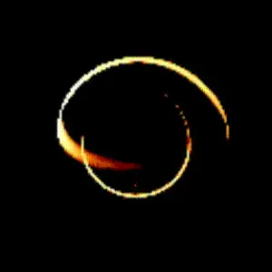
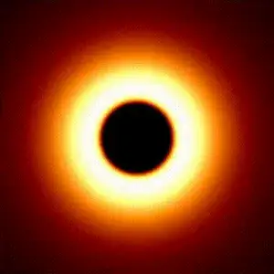
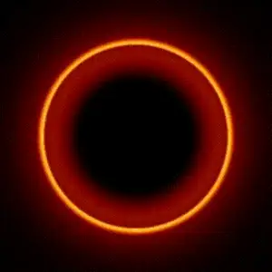
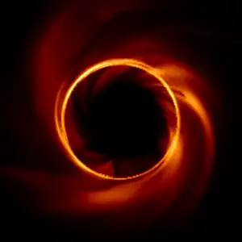

Simulations
Black-hole images begin as equations, then become pictures. I use a sequence of models, starting with a single bright blob and ending with turbulent, magnetized plasma, to ask what a telescope could actually see.
From light rays to turbulent gas
The sequence adds one piece of physics at a time. By the last model, simple geometry has become a turbulent flow.
- 01

Orbiting hotspot
A small flare follows a circular path. Its repeated images show how lensing delays and distorts light near a black hole.
Adds: time delays and multiple images.
- 02

Novikov–Thorne thin disk
A thin, luminous disk. Tilt it toward the camera and the far side folds into view, while gas moving toward us brightens through Doppler beaming.
Adds: disk geometry, viewing angle, and motion.
- 03

Semi-analytic RIAF
A hot, dilute flow that carries the broad character of the plasma around M87* and Sgr A*. It is fast enough to explore large parameter grids.
Adds: a three-dimensional accretion flow.
- 04

GRMHD
Magnetized gas evolves from the equations of general relativity and fluid dynamics, then gets ray traced into an image. This is where the real mess begins.
Adds: turbulence and magnetic fields.